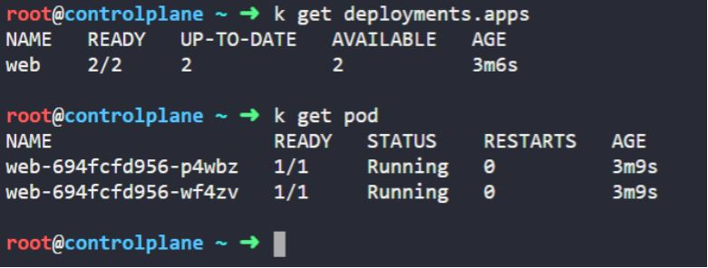
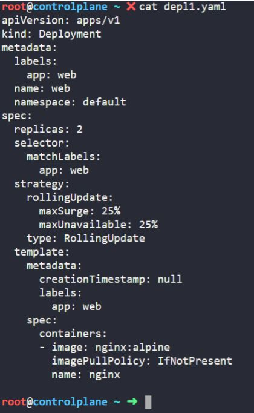
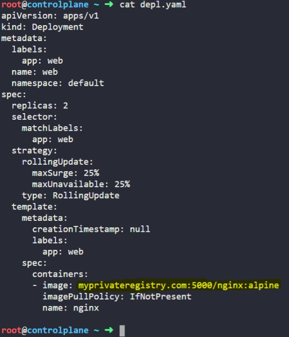
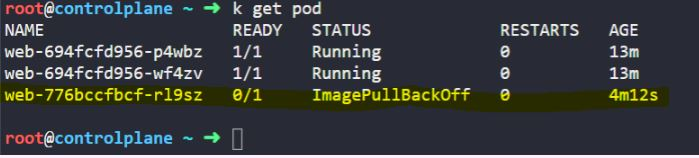
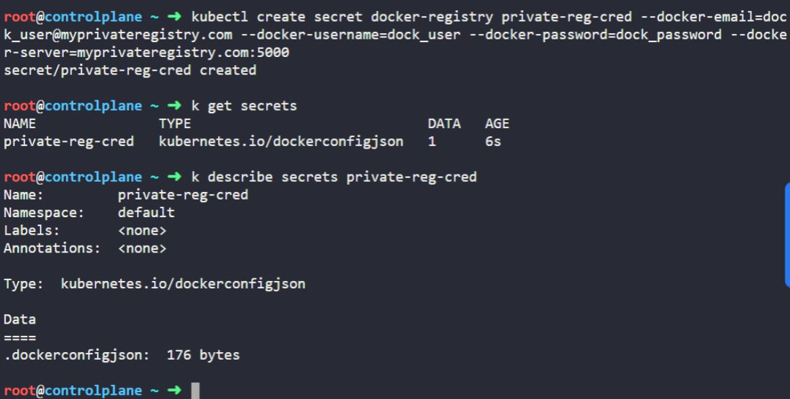
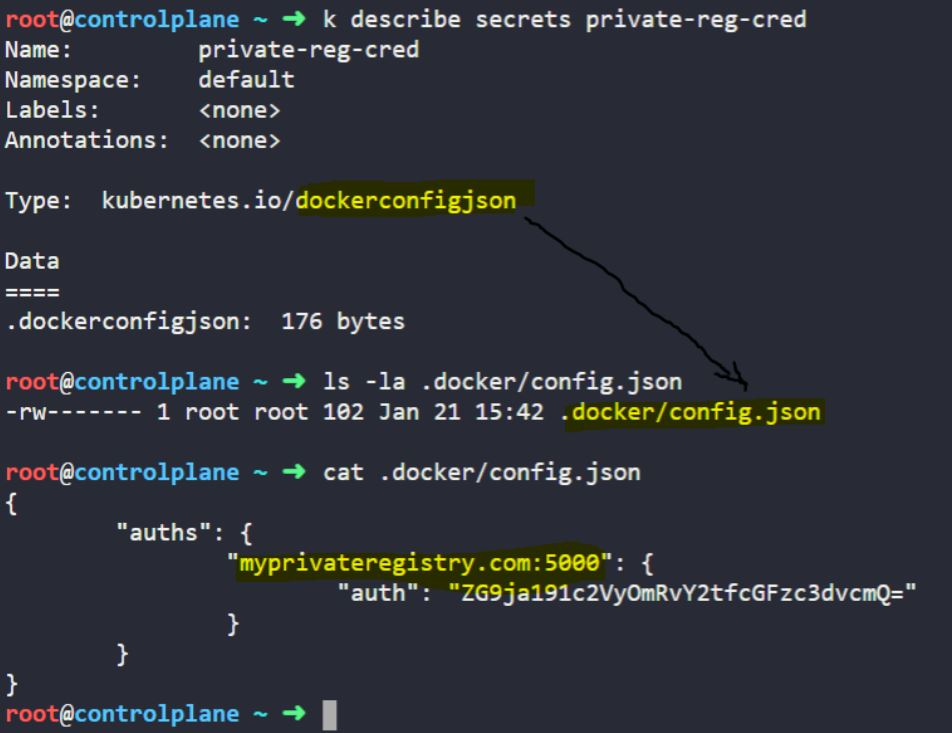
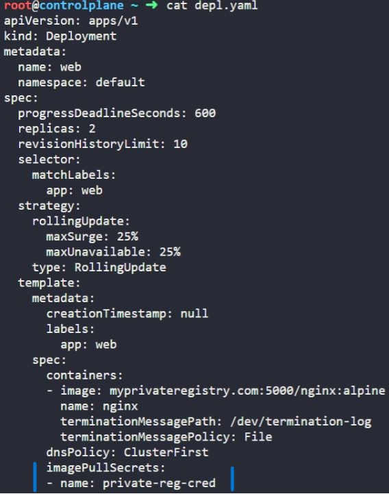
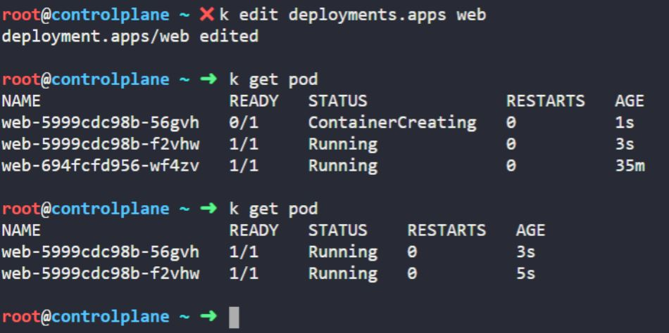

Image Security:
Let say we have deployment and pod :
Deployment original :
But now we want to add our private repository . We will add the path in image
myprivateregistry.com:5000/nginx:alpine
But now there is error as k8 is unable to fetch the image.
To get access we need to create a secret object for
Create a secret object with the credentials required to access the registry.
Name: private-reg-cred Username: dock_user Password: dock_password Server: myprivateregistry.com:5000 Email: dock_user@myprivateregistry.com
kubectl create secret docker-registry private-reg-cred --docker-email=dock_user@myprivateregistry.com --docker-username=dock_user --docker-password=dock_password --docker-server=myprivateregistry.com:5000
 Now configure the deployment to use credentials from the new secret to pull images from the private registry.
 